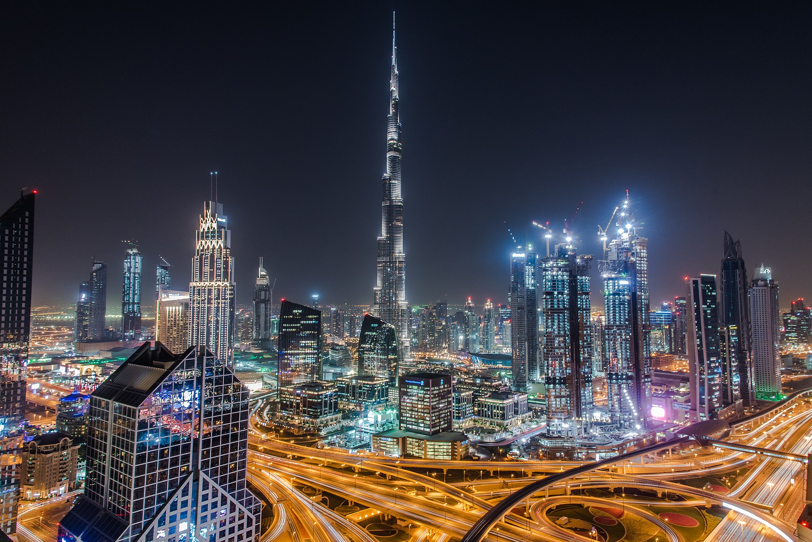

Dubay iqtisodiyoti 2022-yil holatiga koʻra, yalpi ichki mahsulot aholi jon boshiga 46,665 AQSh dollarini tashkil etadi[1]. Tani Bin Ahmad Al Zeyudi BAAning tashqi savdo vaziri, davlatning 10 yil ichidagi noneft savdosi 16,14 trillion Dhs (4,4 trillion dollar)ni tashkil qilganini maʼlum qild. BAAning yalpi ichki mahsuloti 2021-yilda 407 milliard dollardan 2022-yilda 440 milliard dollarga va 2023-yilda 467 milliard dollarga koʻtarildi. Xuddi shunday, aholi jon boshiga yalpi ichki mahsulot ham 2021-yilda 43 868 dollardan 2022-yilda 46 665 dollarga va 2023-yilda 48 822 dollargacha oshdi. Oldin Dubay yalpi ichki mahsulotining 50% ni tashkil etgan neft qazib olish bugungi kunda mamlakat iqtisodiyotining 1% dan kamrogʻini tashkil etmoqda. 2018-yilda ulgurji va chakana savdo umumiy yalpi ichki mahsulotning 26 foizini tashkil etdi; transport va logistika 12%; bank, sugʻurta faoliyati va bozorlar 10%; ishlab chiqarish 9%; koʻchmas mulk 7%; qurilish 6%; turizm esa 5% ni tashkil qilgan
